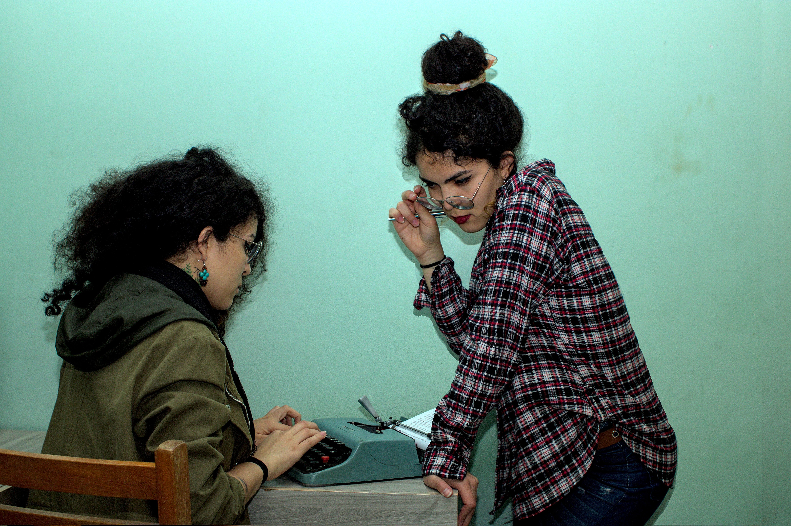

Salve! 👋
Sou Daniely Silva e tô aqui pra arrumar um pouco a bagunça que é o quarto da criatividade.
Poeta, cronista, fotógrafa urbana e ambiental, educadora e geógrafa. Encontrei na luz que invade nossas retinas a tinta para escrever minha poesia fotográfica, externando ao mundo meu olhar para as paisagens, enquanto denuncio a caótica interface formada pelo espaço humanizado, quando as fronteiras urbanas e agrícolas se expandem degradando a paisagem ancestral. Técnica em Processos Fotográficos pelo Senac São Paulo e licenciada em Geografia pelo Instituto Federal de Educação, Ciência e Tecnologia de São Paulo, expus meu trabalho no Festival de Fotografia de Paranapiacaba de 2022 e na exposição Ritmos Urbanos, na Estação Palmeiras-Barra Funda, na parceria entre o Senac SP e a Companhia Paulista de Trens Metropolitanos (CPTM) em 2023. O tempo nos dará respostas, mas só se fizermos as perguntas corretas.